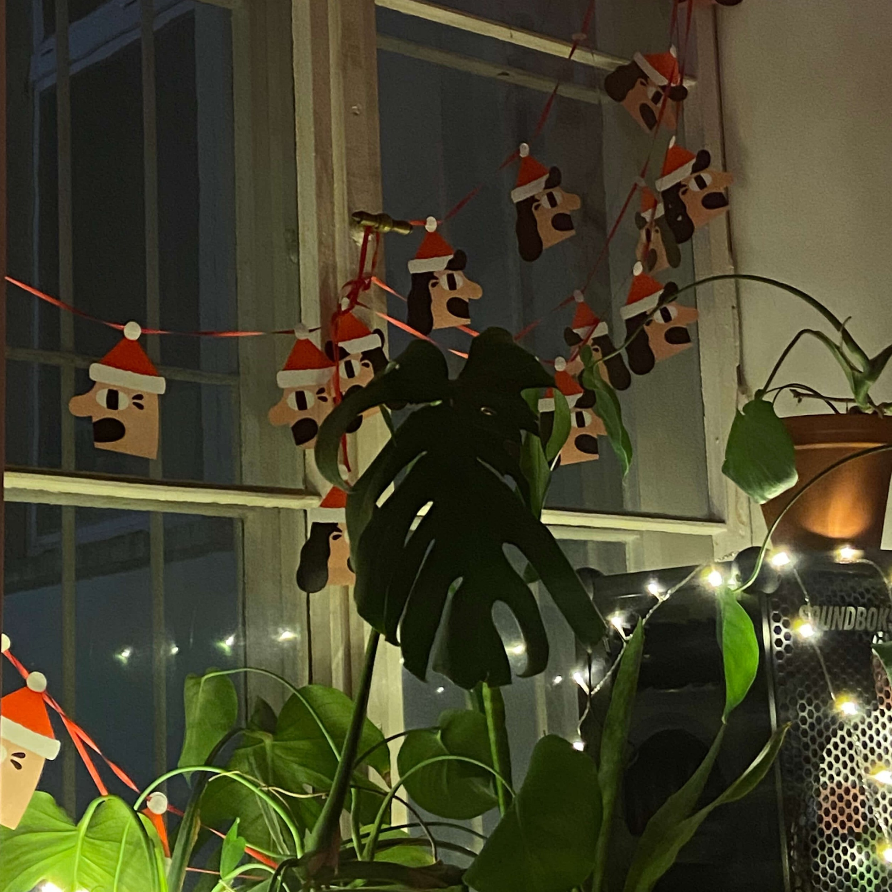
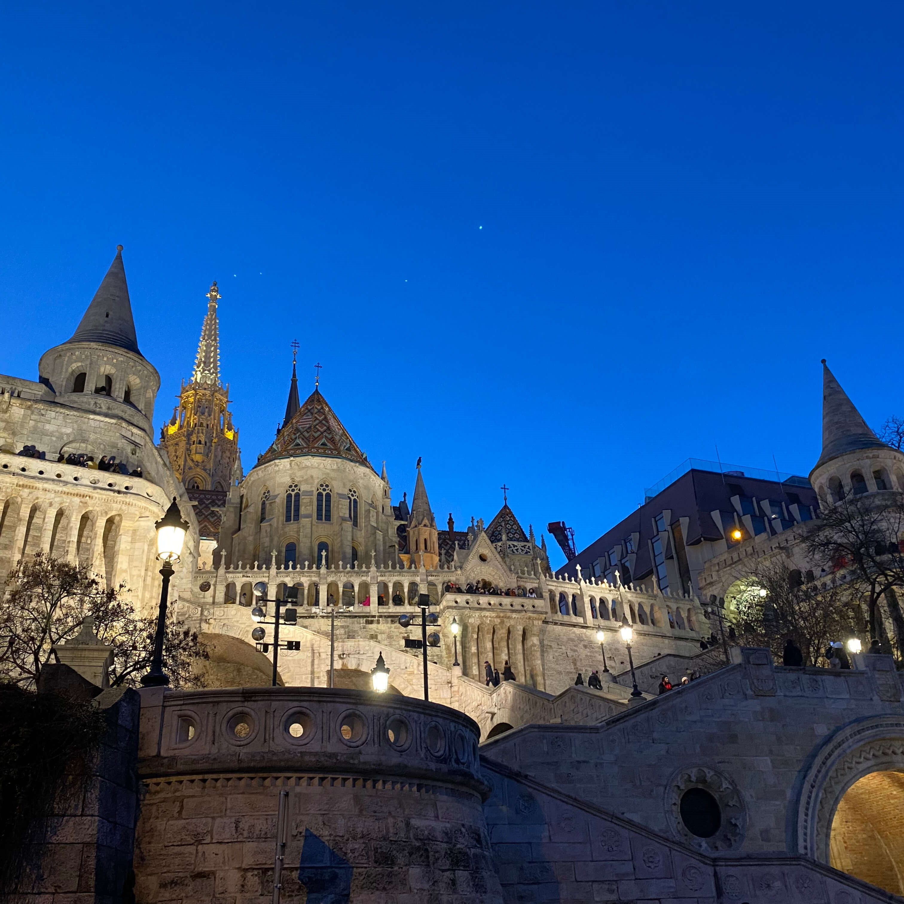
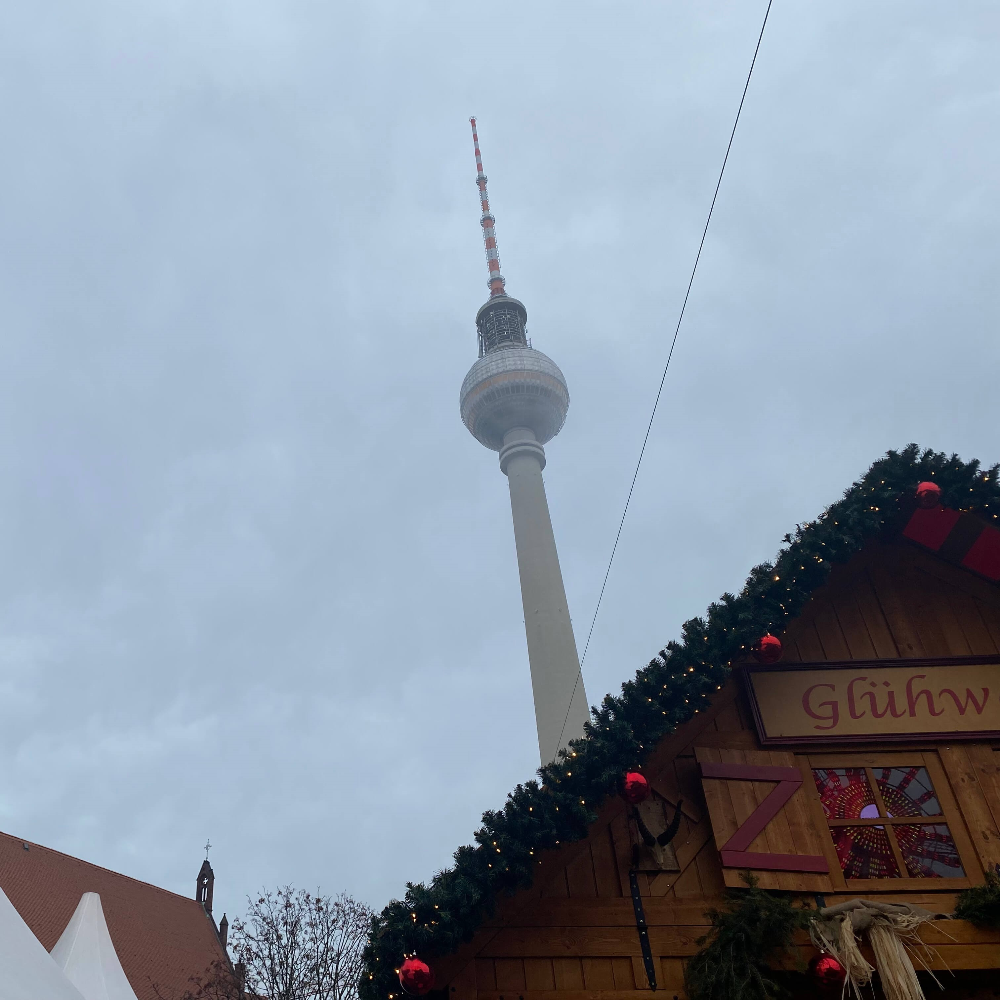
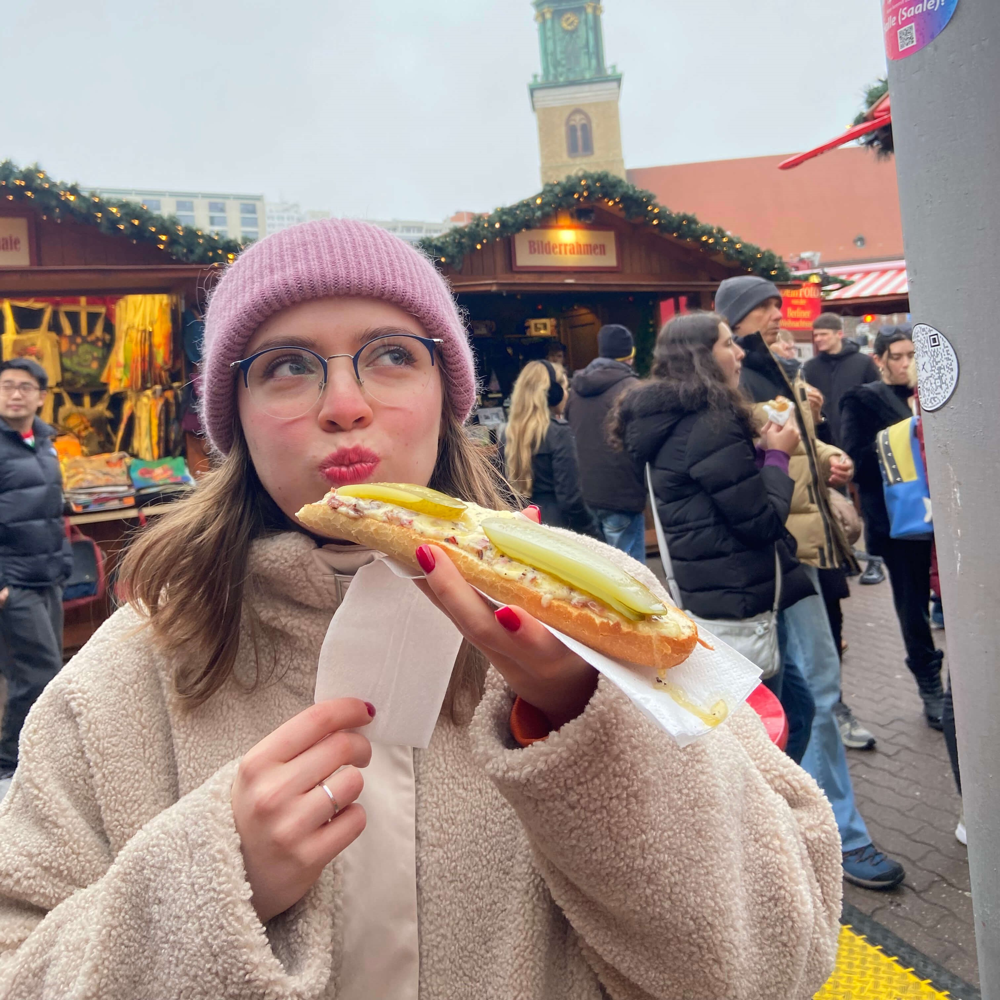

Девять дней зимней сказки в двух городах с совсем разным характером. Глинтвейн, кюртёшкалач и рождественская магия без туристической суеты.

Прилетаем, заселяемся в отель. Вечером — первая прогулка по рождественскому центру, чтобы поймать атмосферу и настроиться на праздник.

Сначала посмотрим световое шоу на фасаде базилики, а потом погуляем по самой ярмарке.
Advent Bazilika находится прямо на площади Святого Иштвана. Здесь же каток, местные ремесленники и рождественская еда.
Обязательно попробуем кюртёшкалач, форралт бор и бейгли.
С утра — купальни Сечени по желанию. Днём просто погуляем по Будапешту и посмотрим город не только через рождественские ярмарки.
Вечером — прогулка вдоль Дуная и ночной Парламент в рождественских огнях.
Едем на ярмарку в Обуде — подальше от главного туристического центра. Здесь спокойнее и меньше ощущения «аттракциона для туристов».
После этого ещё немного погуляем по городу, а вечером будет свободное время. Подскажу винтажки, магазины и места для ужина под интересы группы.
День для себя — для покупок, сувениров, самостоятельного изучения города и личного времени. Все места я покажу на карте и расскажу, куда можно сходить исходя из ваших интересов. Если такой день вам не нужен, вместо него организуем выезд за город — в Гёдёллё, во дворец принцессы Сиси.
Вылетаем в Берлин и заселяемся в отель. После дороги немного погуляем по центру и познакомимся с городом.
Вечером можно спокойно выбрать ресторан или бар — подскажу варианты, если понадобится.

Начнём с Жандарменмаркт: немецкие колбаски, картофельные оладьи, горячий шоколад и каток. Заодно погуляем по историческому центру Берлина.
Вечером — Красная ратуша, карусели и еда со всего мира.
У дворца Шарлоттенбург — музыка, подсветка и рождественская ярмарка. Заодно посмотрим сам дворец и погуляем вокруг.
Вечером — Historischer Weihnachtsmarkt на RAW-Gelände. Здесь уже совсем другой Берлин — немного грубый и андеграундный.
Утром можно докупить подарки и сувениры или просто спокойно позавтракать и погулять.
Вылет домой. Подберу оптимальные билеты под ваш бюджет.
Как платить10 000 ₽ предоплата до получения визы. Остаток — в евро.
Авиабилеты, визовый сбор и сбор визового центра оплачиваются отдельно.
Проживание
Будапешт — A&O, ibis, Mercure и другие сетевые отели.
Берлин — A&O, ibis, Mercure и другие сетевые отели.
